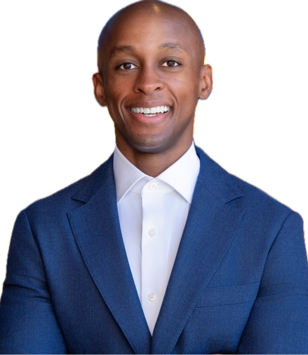

For Haven Institute of Technology
A twelve‑week programme that teaches Haven's senior students to use AI to do real work: map the process, build the system, check the result, and hand it over running. Built for a cohort of 20 to 25 students in [Term, 2026].
Why now
Microsoft now calls running several agents across a workflow Orchestrator, one of four standard patterns of work. Operating and orchestrating AI is the skill, and it is what this course teaches.
Microsoft and LinkedIn 2024 · PwC Global AI Jobs Barometer 2025 · BCG AI at Work 2026 · Microsoft Work Trend Index 2026
Kenya's moment
Government AI Readiness Index 2025. The index measures government readiness, not talent.
Kenya has made AI a national priority, and its readiness is climbing faster than anywhere else on the continent. The ambition is set. The bottleneck now is people who can do the work.
Oxford Insights Government AI Readiness Index 2025
Of 882,100 jobs created in 2025, 716,800 were informal. Strong credentials still matter. They no longer guarantee a trajectory on their own.
AFP, Jul 2025 · KNBS Economic Survey 2026 via Capital FM, Apr 2026
The strategic position
AI is automating the entry rung of knowledge work, the level most graduates start on. Students who can direct AI do not compete for that rung. They sit above it, deciding what the work should be and checking that it was done. That is where the work is going, not where it is leaving.
These students already reach the world's most selective universities. The Equity Leaders Program alone sent 128 scholars to universities in 20 countries in 2025, 16 of them to the Ivy League. Twelve weeks of operator capability turns that trajectory into a position almost no graduate, anywhere, can yet claim.
Equity Group Holdings, Aug 2025 (company‑reported)
What an AI‑native operator is
A graduate of this course starts a first job. The team says: here is how we do this today.
By midweek she has sat with the person who does the work, mapped it step by step, and found the two steps that consume hours, and the one step where judgment matters too much to automate.
By Friday she has built a working automation, with an approval gate where the owner stays in control, and can show the time it saves, measured rather than guessed.
She explains it in plain language. The team keeps using it after she moves on.
The outcome this course contracts to deliver
Agent orchestration is the headline skill. Judgment about when not to automate is part of the skill, not an afterthought.
The course · twelve weeks, four phases
No exams. Assessment is a public portfolio plus a capstone panel. The capstone's standard of success is strict: the automation still in use after the student leaves.
The discipline · taught explicitly, used every week
Students justify the level they choose for every step of every build, and know how to move up and how to roll back. Verification is graded every week: each build carries a note on what was checked, and how.
What students leave with
Each with a measured before and after, and a note on what was checked and how.
Delivered with a runbook and a trained owner, measured against the baseline agreed in week 10.
Concrete practice on Claude, Claude Code, and MCP connectors. The concepts transfer to any vendor.Claude Code passed a $2.5B run‑rate; 8 of the Fortune 10 among 500+ firms spending over $1M a year. Anthropic, Feb 2026 (company‑reported).
Collected along the way. The underlying AI Fluency framework is published under a Creative Commons licence.
Who teaches it
Managing Executive: Artificial Intelligence, leading AI transformation across Africa's largest fintech platform. He designed this course, and teaches both weekly sessions himself.
Born in Kenya, raised in the United States, returned in 2026. Coming home to build, and to train the next generation, is the point of the move.
The position on offer
As of June 2026, we found no published school‑level programme anywhere with agent orchestration as its core outcome.
Our research synthesis across CodeAI, Khanmigo, OpenAI's certifications, Inspirit AI, and university‑level agentic curricula, June 2026. Structured agentic‑AI training appeared only at university and professional level. Your students would be early.
What the programme needs
The next step
The course is designed, the evidence base is verified, and the instructor is in Nairobi.
The proposed next step is a scoping conversation with Haven leadership: term timing, institutional access, student selection, capstone-client vetting, and a named faculty liaison.
Every statistic in this proposal has a row in our claims register, with a source link verified on 12 June 2026.
Students learn to take real work, rebuild it with AI from the ground up, and hand it over running — ready to transform operations in any industry, in any country.
Six working builds·One real‑organisation capstone·A public portfolio

Twelve years at Amazon and AWS building and scaling AI‑native businesses and products from zero to one — across e‑commerce, IoT, supply chain, health, and life sciences. Led large science, engineering, and product organisations, managed $700M+ P&Ls, and delivered frontier ML, computer vision, and LLM capabilities at global scale.